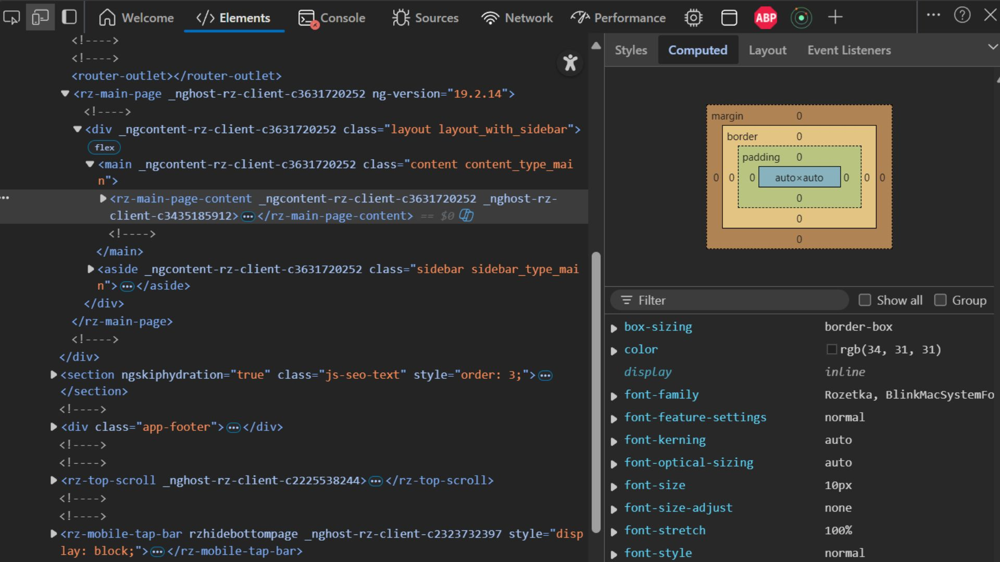
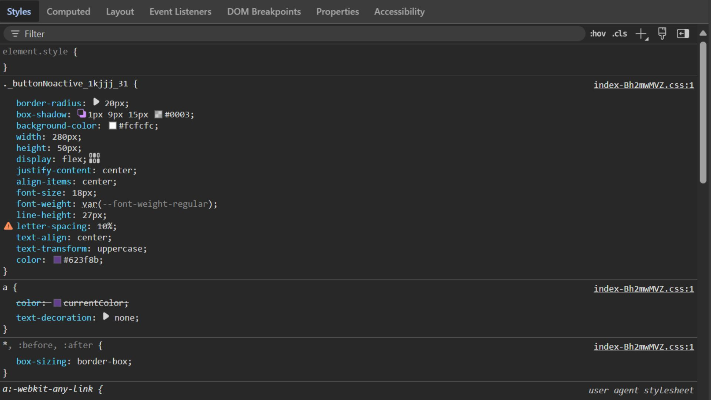
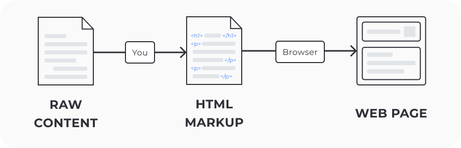

🌐 Основи HTML
🛠 Інструменти розробника
Розробники мають унікальну можливість заглядати "під капот" сайтів, на які вони заходять. Це дозволяє не тільки вивчати чужий код, а й тестувати, налагоджувати та оптимізувати свої проєкти.
Інструменти розробника — це набір вбудованих функцій у браузері, які надають доступ до різних аспектів веб-сторінки, таких як вихідний код, стилі, мережеві запити та багато іншого.

Як відкрити інструменти розробника?
- Для Windows натискаємо комбінацію клавіш Ctrl+Shift+I.
- Для MacOS натискаємо Cmd+Opt+I.
- Або ж, правою кнопкою миші на веб-сторінці обираємо пункт Переглянути код (останній пункт у випадаючому меню).
За замовчуванням відкривається вкладка Elements, де відображається внутрішня HTML-структура сторінки. Коли ви наводите курсор на елемент, він підсвічується на екрані браузера, що дозволяє швидко орієнтуватися у коді.
Вкладка Styles показує всі стилі, що застосовуються до елементів сторінки: кольори, відступи, шрифти тощо.
Ці інструменти допоможуть вам краще зрозуміти, як працюють сайти, а також використовувати їх для налагодження та оптимізації своїх власних проєктів.
Час спробувати!
Відкрийте інструменти розробника на своєму улюбленому сайті та подивіться, як все влаштовано "під капотом".
💡 Що таке мова HTML?
HTML (HyperText Markup Language) — це мова розмітки, яка використовується для створення структури веб-сторінок. Вона дозволяє організувати текстову інформацію, додавати зображення, створювати таблиці, форми, списки та інші елементи на веб-сторінці.
Як працює HTML?
HTML-документ — це текстовий файл з розширенням .html, який інтерпретується браузером. Коли ви відкриваєте веб-сторінку, браузер не показує вам вихідний код, а обробляє HTML-файл і відображає результат — саме так ви бачите сторінку у своєму браузері.
🔧 Стандарти HTML
HTML став основою для всіх веб-сторінок, тому було необхідно створити стандарти для його використання. Наразі цим займається організація Web Hypertext Application Technology Working Group (WHATWG), яка підтримує стандарт HTML Living Standard — це постійно оновлюваний набір правил, який допомагає розробникам створювати сучасні веб-документи.
🌲 DOM-дерево: як це працює?
DOM (Document Object Model) — це модель об'єктів документа, яка представляє структуру HTML-документа у вигляді дерева. Уяви, що веб-сторінка — це дерево, де кожен елемент сторінки (заголовки, абзаци, зображення) є гілкою або листочком. Це дерево дозволяє браузеру швидко знайти та відобразити потрібні частини сторінки.
Як працює DOM?
- Корінь дерева — це сам документ (HTML-документ).
-
Гілки дерева — це елементи сторінки: теги
<html>,<body>,<head>, тощо. - Листочки дерева — це текст або інші елементи, що знаходяться всередині тегів.

Це допомагає організувати всі елементи сторінки в ієрархічній структурі, що полегшує роботу браузера при завантаженні та відображенні сайту.
❓ Чому це важливо?
Розуміння того, як працює HTML і DOM, допомагає тобі створювати добре структуровані та ефективні веб-сторінки. Коли ти почнеш створювати свої проєкти, знання цих основ дозволить тобі краще керувати елементами сторінки та впевнено працювати з HTML-кодом.